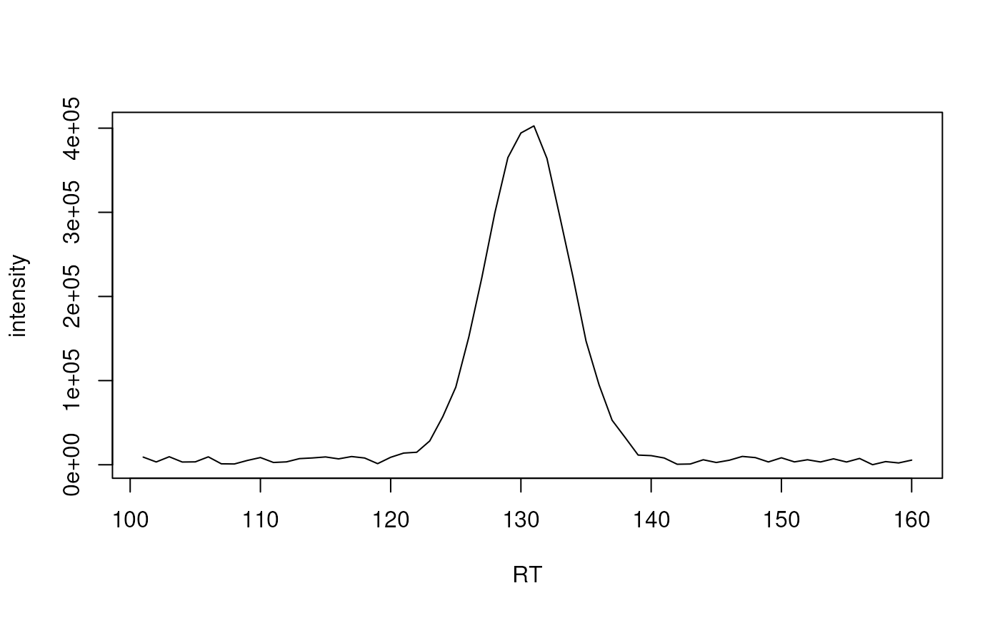

Calculate beta parameters for a chromatographic peak, both its similarity
to a bell curve of varying degrees of skew (i.e., assymmetry or
tailing factor) and the standard deviation of the residuals after the
best-fit bell is normalized and subtracted. This function
requires at least 5 scans or it will return NA for both parameters.
Arguments
- intensity
A
numericvector corresponding to the peak intensities with a minimum length of 5.- rtime
A numeric vector corresponding to the retention times of each intensity. Retention times are expected to be in increasing order without duplicates. If not provided, intensities will be assumed to be equally spaced.
- skews
A
numericvector of the skews to try. These values will be passed toshape1parameter of thedbeta()function (with itsshape2parameter set to5). Values less than 5 will generated increasingly right-skewed curves, while values greater than 5 will result in left-skewed curves. See Figure 8 in the original manuscript for visual examples.- zero.rm
logical(1)controlling whether missing scans are dropped prior to curve fitting. The default,zero.rm = TRUE, will remove intensities of zero orNA.
Details
The function compares the actual chromatographic peak to Beta distribution
curves calculated with the dbeta() function.
References
Kumler W, Hazelton B J and Ingalls A E (2023) "Picky with peakpicking: assessing chromatographic peak quality with simple metrics in metabolomics" BMC Bioinformatics 24(1):404. doi: 10.1186/s12859-023-05533-4
See also
dbeta() for the function to calculate the Beta distribution.
Examples
## Define intensity values of a typical chromatographic peak
skinny_peak <- c(9107, 3326, 9523, 3245, 3429, 9394, 1123, 935, 5128, 8576,
2711, 3427, 7294, 8109, 9288, 6997, 9756, 8034, 1317, 8866,
13877, 14854, 28296, 57101, 92209, 151797, 222386, 299402,
365045, 394255, 402680, 363996, 293985, 222989, 147007,
94947, 52924, 32438, 11511, 10836, 8046, 601, 889, 5917,
2690, 5381, 9901, 8494, 3349, 8283, 3410, 5935, 3332,
7041, 3284, 7478, 76, 3739, 2158, 5507)
skinny_peak_rt <- seq_along(skinny_peak)+100
plot(skinny_peak_rt, skinny_peak, xlab = "RT",
ylab = "intensity", type = "l")

## Calculate beta parameters for the full region including noise signal
## around the peak
res <- betaValues(skinny_peak, skinny_peak_rt)
res
#> best_cor beta_snr
#> 0.727437 6.789728
## Calculate beta parameters for peak signal
res <- betaValues(skinny_peak[20:40], skinny_peak_rt[20:40])
res
#> best_cor beta_snr
#> 0.9858619 7.1275735
## Define noisy chromatographic signal
noise_peak <- c(0.288, 0.788, 0.409, 0.883, 0.94, 0.046, 0.528, 0.892,
0.551, 0.457, 0.957, 0.453, 0.678, 0.573, 0.103, 0.9,
0.246, 0.042, 0.328, 0.955, 0.89, 0.693, 0.641, 0.994,
0.656, 0.709, 0.544, 0.594, 0.289, 0.147, 0.963, 0.902,
0.691, 0.795, 0.025, 0.478, 0.758, 0.216, 0.318, 0.232,
0.143, 0.415, 0.414, 0.369, 0.152, 0.139, 0.233, 0.466,
0.266, 0.858, 0.046, 0.442, 0.799, 0.122, 0.561, 0.207,
0.128, 0.753, 0.895, 0.374, 0.665, 0.095, 0.384, 0.274,
0.815, 0.449, 0.81, 0.812, 0.794, 0.44, 0.754, 0.629, 0.71,
0.001, 0.475, 0.22, 0.38, 0.613, 0.352, 0.111, 0.244, 0.668,
0.418, 0.788, 0.103, 0.435, 0.985, 0.893, 0.886, 0.175,
0.131, 0.653, 0.344, 0.657, 0.32, 0.188, 0.782, 0.094,
0.467, 0.512)
noise_peak_rt <- seq_along(noise_peak) + 10
res <- betaValues(noise_peak, noise_peak_rt)
res
#> best_cor beta_snr
#> -0.03291661 0.39695171